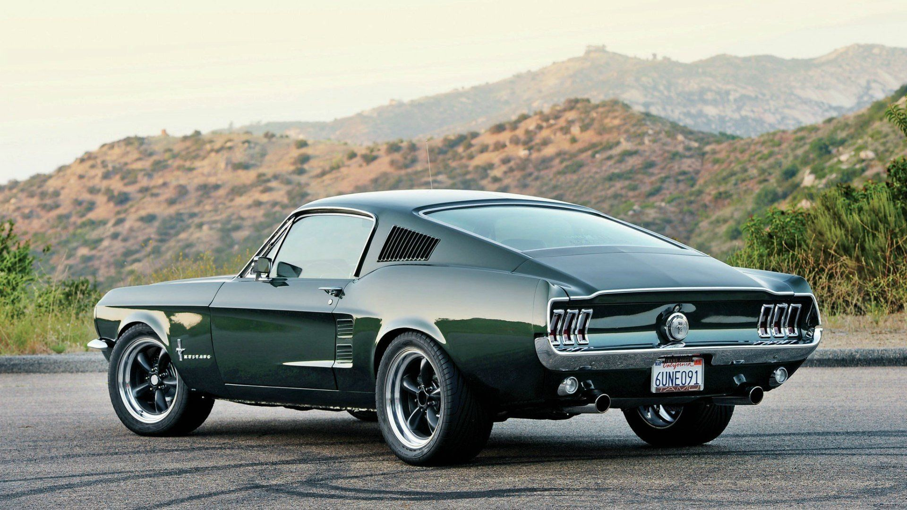
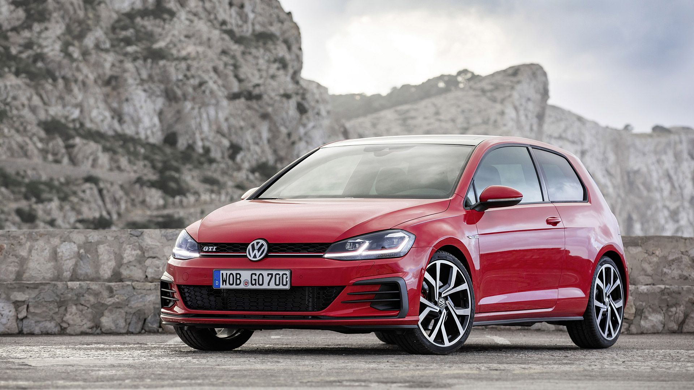
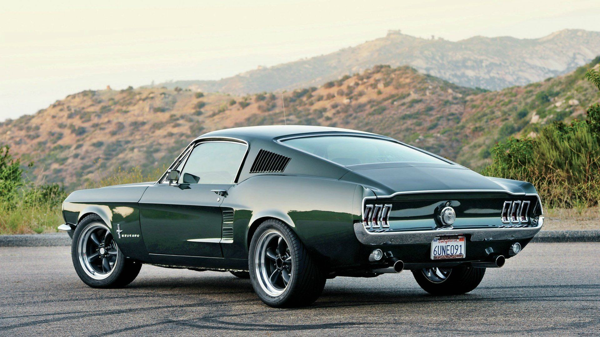
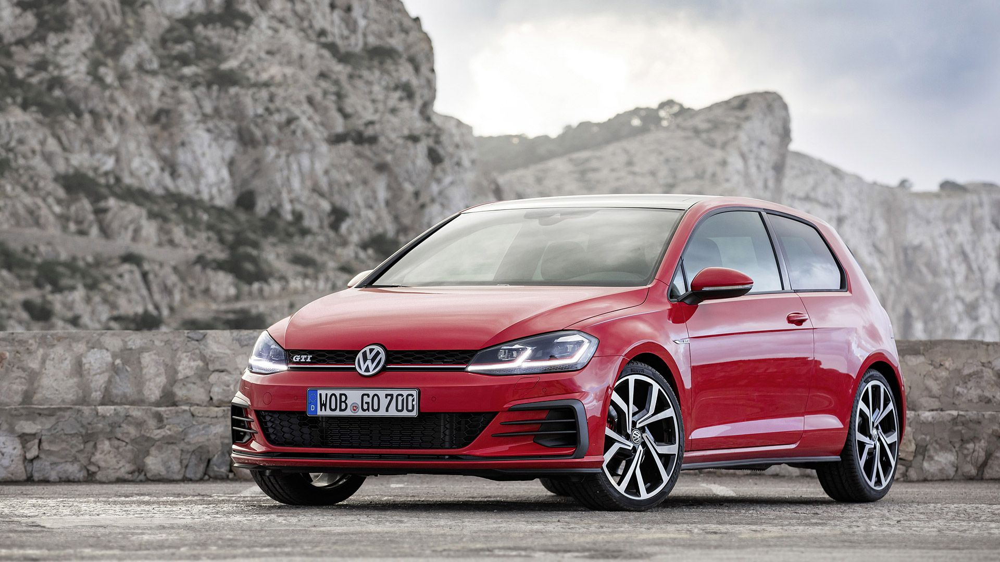

Civic Type R
A história do Civic Type R percorre 25 anos de evolução imparável e 6 gerações de paixão contagiante. Este modelo, que tem as suas raízes no mundo da competição, é um dos carros mais lendários de sempre, com um perfil robusto, traços assumidamente desportivos e uma condução verdadeiramente emocionante.
Civic Geração 5
Design Projetado pelo designer Kohichi Hirata, o Honda Civic G5 é um dos favoritos do público e isso se deve, em boa parte, ao seu design que traz uma interpretação mais moderna e fluída das linhas do modelo de quarta geração, o que o fez ser o “queridinho” dos fãs de customizações.
Civic SI
A atual geração do Civic Si foi a primeira da família a usar motor turbinado, mais precisamente o 1.5 quatro cilindros turbo com 208 cv e 26,5 kgfm de torque. No Brasil, a oitava geração, conhecida como New Civic, é a mais cultuada. Foi somente nesta época que o Civic Si foi produzido no Brasil e, de forma recorrente, era comparado ao Volkswagen Golf GTI.
Mustang 1964
O local da estréia do primeiro Ford Mustang foi incomum: na Feira Mundial em Nova York, Henry Ford II apresentou o carro em 17 de abril de 1964. Foi apresentado como um coupé hardtop e como um conversível. Desde o início, o Mustang foi um sucesso de vendas.
Golf GTI
Além das mesmas mudanças visuais feitas no europeu, o Golf GTI trará mais tecnologia, como o painel de instrumentos em tela de TFT e central multimídia com comandos por gestos, e o motor 2.0 TFSI passará dos 220 cv para 230 cv, sempre ligado ao câmbio DSG, de dupla embreagem, com 6 marchas.
Megane R.S
As equipes da Renault Sport baseadas em Les Ulis, no sudoeste da região metropolitana de Paris, se dedicaram ao projeto do Megane com a mesma paixão e busca pela performance. Responsável pelo desenvolvimento de diferentes versões do Megane com a assinatura Renault Sport, Laurent Hurgon revela alguns segredos por trás do sucesso da Renault Sport Cars: “Como a Renault Sport tinha uma enorme experiência em competições, adaptamos as lições aprendidas nos circuitos e ralis para os carros de produção em série. Por exemplo, o batente hidráulico de compressão visto pela primeira vez no Clio 2 R.S.
Punto Abarth
O Fiat Abarth é uma linha de carros de alto desempenho, conhecida por sua agilidade e desempenho excepcionais. Fundada em 1949 por Carlo Abarth e Guido Scagliarini na Itália, a empresa começou focada em produzir veículos esportivos e em oferecer serviços de tuning para marcas como Fiat, Alfa Romeo, Lancia, entre outras.